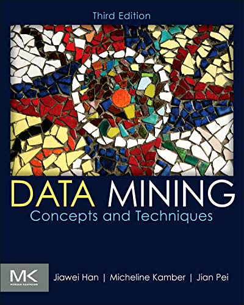

This book is an introduction to the young and fast-growing field of data mining (also known as knowledge discovery from data, or KDD for short).
he book focuses on fundamental data mining concepts and techniques for discovering interesting patterns from data in various applications. In particular, we emphasize prominent techniques for developing effective, efficient, and scalable data mining tools.This chapter is organized as follows. In Section 1.1, you will learn why data mining is in high demand and how it is part of the natural evolution of information technology. Section 1.2 defines data mining with respect to the knowledge discovery process. Next, you will learn about data mining from many aspects, such as the kinds of data that can be mined (Section 1.3), the kinds of knowledge to be mined (Section 1.4), the kinds of technologies to be used (Section 1.5), and targeted applications (Section 1.6). In this way, you will gain a multidimensional view of data mining. Finally, Section 1.7 outlines major data mining research and development issues.
1.1 Why Data Mining?
Necessity, who is the mother of invention. – Plato We live in a world where vast amounts of data are collected daily.
society, science and engineering, medicine, and almost every other aspect of daily life.
This explosive growth of available data volume is a result of the computerization of our society and the fast development of powerful data collection and storage tools.
Businesses worldwide generate gigantic data sets, including sales transactions, stock trading records, product descriptions, sales promotions, company profiles and performance, and customer feedback. For example, large stores, such as Wal-Mart, handle hundreds of millions of transactions per week at thousands of branches around the world. Scientific and engineering practices generate high orders of petabytes of data in a continuous manner, from remote sensing, process measuring, scientific experiments, system performance, engineering observations, and environment surveillance.
Global backbone telecommunication networks carry tens of petabytes of data traffic every day. The medical and health industry generates tremendous amounts of data from medical records, patient monitoring, and medical imaging.
Billions of Web searches supported by search engines process tens of petabytes of data daily. Communities and social media have become increasingly important data sources, producing digital pictures and videos, blogs, Web communities, and various kinds of social networks. The list of sources that generate huge amounts of data is endless.
This explosively growing, widely available.It’s tempting to jump straight into mining, but first, we need to get the data ready. This involves having a closer look at attributes and data values.
into mining, but first, we need to get the data ready. This involves having a closer look at attributes and data values. Real-world data are typically noisy, enormous in volume (often several gigabytes or more), and may originate froma hodgepodge of heterogenous sources. This chapter is about getting familiar with your data. Knowledge about your data is useful for data preprocessing (see Chapter 3),
This chapter is organized as follows. In Section 1.1, you will learn why data mining is in high demand and how it is part of the natural evolution of information technology. Section 1.2 defines data mining with respect to the knowledge discovery process. Next, you will learn about data mining from many aspects, such as the kinds of data that can be mined (Section 1.3)
1.1 Why Data Mining?
“So what can we learn about our data that’s helpful in data preprocessing?” We begin in Section 2.1 by studying the various attribute types. These include nominal attributes.
Nominal Attributes
Nominal means “relating to names.” The values of a nominal attribute are symbols or names of things. Each value represents some kind of category, code, or state, and so nominal attributes are also referred to as categorical.
Both hair color and marital status are nominal attributes. Another example of a nominal attribute is occupation, with the values teacher, dentist, programmer, farmer, and so on.
Because nominal attribute values do not have any meaningful order about them and are not quantitative, it makes no sense to find the mean (average) value or median (middle) value for such an attribute, given a set of objects. One thing that is of interest, however, is the attribute’s most commonly occurring value.
Interval-scaled attributes are measured on a scale of equal-size units. The values of interval-scaled attributes have order and can be positive, 0, or negative. Thus, in addition to providing a ranking of values, such attributes allow us to compare and quantify the difference between values.